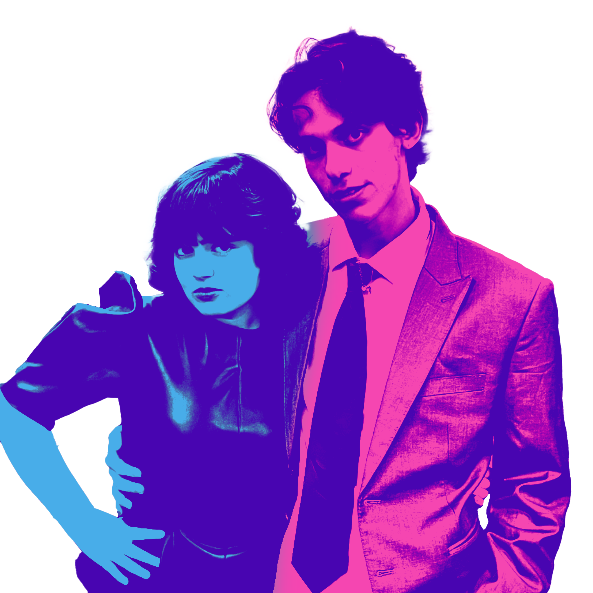

About Us
5th Hr. is a duo band based in Tempe, AZ. Established in 2024 by Gwen Selfridge and Jonah Lopez, the main goal of the duo is to record and perform their original music to the world. Hopefully, it can be a career.
5th Hr. has an indie rock/coffee house sound. Jonah Lopez plays acoustic and electric guitar while Gwen Selfridge plays the keyboard. They collaborate on the writing of their songs, taking part in both lyrics and music.

Members
Jonah Lopez is majoring in Media Arts & Sciences with a focus in music. He's always loved writing and playing music on his guitar and hopes for a future of sharing his music with the world.
Gwen Selfridge is also majoring in Media Arts & Sciences but with a focus in graphic information technology. She loves performing live and harmonizing with Jonah.
Upcoming Gigs
Nothing is on the books currently!
Follow us to stay updated!